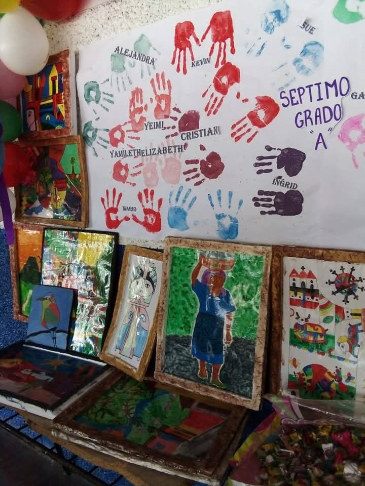

Básica
La educación básica abarca desde cuarto grado hasta noveno grado y proporciona a los estudiantes una formación académica completa en diversas áreas del conocimiento. Se desarrollan competencias fundamentales como el pensamiento crítico, la comunicación, la resolución de problemas y la formación en valores.
Materias de primero a segundo grado
- calculemos
- Ciencia y Tecnología
- Ciudadanía y Valores
- Comunicaciones
Materias de cuarto a sexto grado
- Aritmética y finanzas
- Comunicación y Literatura
- Ciencia y Tecnología
- Ciudadanía y Valores
- Educación Física
Materias de Séptimo a Noveno grado
- Lenguaje y Literatura
- Matemáticas y Datos
- Ciencia y Tecnología
- Ciudadanía y Valores
- Inglés
- Informática
